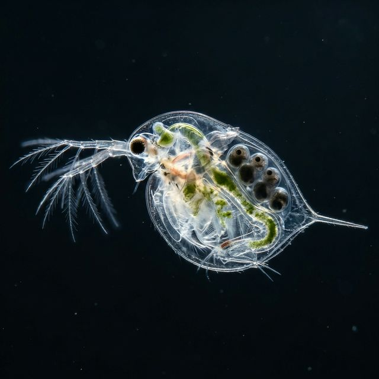
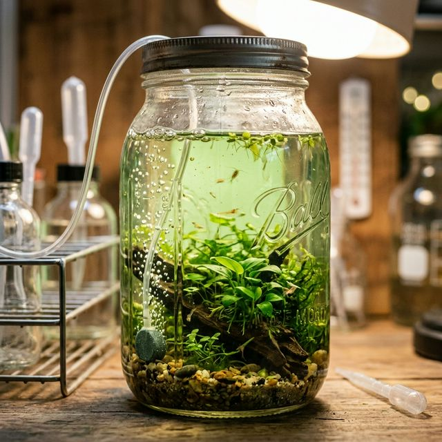
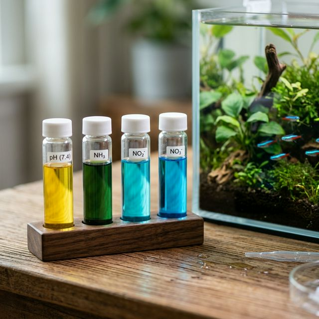
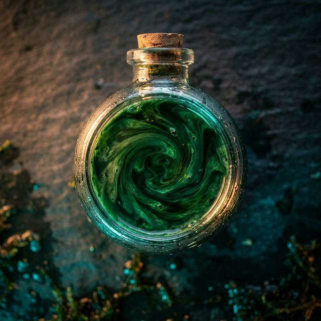
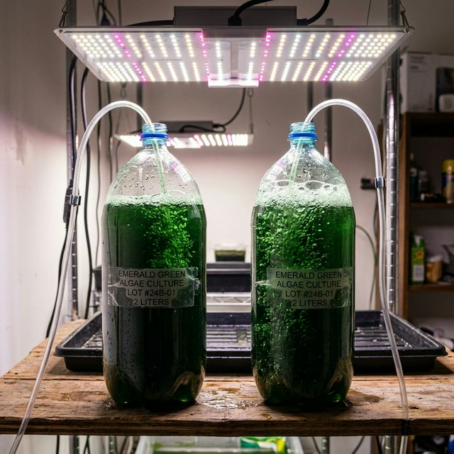
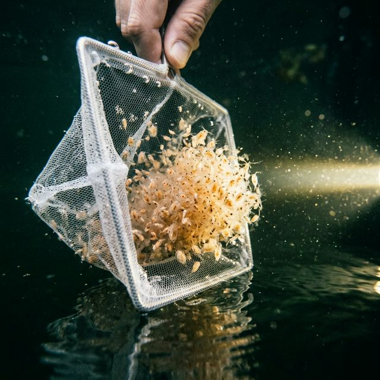
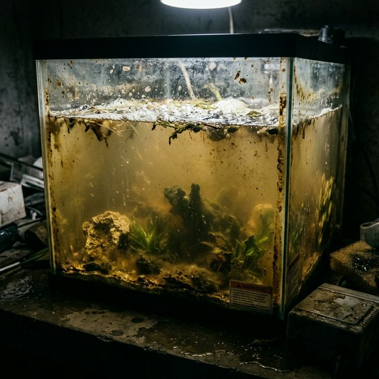

Biology & Life Cycle
Understanding *how* Daphnia replicate and survive is critical to managing a stable, perpetual culture. You cannot treat them like normal aquarium fish; their life cycle is highly specialized to surviving transient puddle and pond environments.

Parthenogenesis (Cloning)
Under good conditions (plenty of food, good oxygen, stable temperatures), nearly all Daphnia in a culture are clones of a single female. The females reproduce asexually through parthenogenesis, bypassing the need for males. A healthy female will molt her exoskeleton, release a brood of fully formed live young from her brood chamber, and immediately begin developing the next clutch.
This biological mechanism is why Daphnia cultures can explode in density in just a matter of days when heavily fed.
Expert Environmental Stress & Ephippia
When the colony is stressed (e.g., severe overcrowding, cold temperatures, sudden starvation, or toxins), the biological program flips. The females begin producing males. Following sexual reproduction, the females produce dark, saddle-shaped, thick-walled resting eggs called Ephippia.
These ephippial cysts can survive freezing temperatures, drought, and digestion by birds. In aquaculture, spotting dark, granular specs floating or sinking in your tank is a definitive sign your culture is highly stressed and attempting to preserve its genetics before a total crash.
The Molting Cycle
energy and significant amounts of calcium and trace minerals from the water. Soft water (low GH/KH) fundamentally breaks this molting process. Ecdysozoan shedding failures lead to immediate mortality, making mineral replenishment essential.Procuring a Culture Without a Purchase
If you cannot purchase a pure laboratory or hobbyist starter culture, you have two natural procurement methods:
- Wild Catching: During spring or fall, sweep a fine-mesh brine shrimp net through fishless, slow-moving ponds or ditches. Once caught, place the container in the dark and shine a flashlight on one corner—Daphnia are phototactic and will swarm the light. Use a pipette to suck out pure Daphnia. CRITICAL: Wild catches must be quarantined to prevent introducing hydra or predatory water beetles into your tanks.
- Hatching Ephippia: You can purchase dormant, dry "resting eggs" (ephippia) online, or harvest them from dried mud surrounding vernal pools. Place the eggs in a shallow container of warm (20°C) dechlorinated water under bright light. They will hatch into neonates within a few days.
Containers, Scaling, & Setup
Daphnia can be cultured in tiny jars on a windowsill or massive stock tanks in a greenhouse. Your choice of container defines your harvest yield and maintenance overhead.

1. Nano Setups (≤ 1 Gallon / ~4 Liters)
Ideal for: Extreme beginners, casual breeders feeding fry, or keeping pure backup starter cultures.
Setup: A large wide-mouth mason jar, clear plastic pitcher, or small 1-gallon aquarium. Set in a windowsill receiving bright, indirect light to encourage microalgae growth. No aeration is required if the population density is kept strictly low.
Expert Nano Vulnerability
Thermal mass in 1-gallon systems is virtually nonexistent. A room temperature swing of 5°C will swing the water temperature just as fast, stressing the colony. Furthermore, the lack of mechanical aeration means you rely exclusively on surface-gas exchange.
2. Medium Setups (5 - 10 Gallons / ~20-40 Liters)
Ideal for: Hobbyist fish keepers feeding a few show tanks weekly.
Setup: Plastic storage totes, Home Depot buckets, or standard 10-gallon glass aquariums. These provide the best balance of stability and footprint.
- Aeration: Mandatory. Use a bare, rigid airline tube pushed to the bottom of the container. Adjust the air pump to a very slow "bloop... bloop..." (roughly 2-3 bubbles per second).
- Lighting: A cheap LED clamp light or shop light set on a 12-hour timer.
3. Production Stock Tanks (50+ Gallons / 200+ Liters)
Ideal for: Serious breeders, fishrooms, or commercial live-food harvesting.
Setup: Black Rubbermaid Tuff Stuff agricultural tubs, IBC totes, or large garbage cans kept outdoors or in a heated garage. The massive water volume buffers against overfeeding, providing incredible resilience.
Expert Advanced Culturing Mechanics
Surface Area to Volume Ratio: Daphnia tanks should always be wide and shallow rather than narrow and deep. Maximize the gas exchange surface. Totes are superior to buckets for this exact reason.
Never Use Fine-Pore Airstones: Tiny micro-bubbles act like physical weapons against Daphnia. The micro-bubbles become trapped beneath their carapace, turning them into floating, helpless balls that eventually starve or rupture. Always use large, coarse bubbles via rigid open tubing.
Co-Culturing with Detritivores: Introduce non-predatory snails (Ramshorn or Bladder snails). They act as a living bio-filter, scouring the bottom of the tub to consume decaying spirulina/yeast before it rots and creates an ammonia spike. Without snails, the bottom glass will build up a toxic biofilm rapidly.
Granular Water Chemistry
Treating Daphnia water with the same precision as fish water is the secret to unlocking exponential cloning rates instead of stagnant, miserable populations.

Optimal Parameter Ranges
Fundamental Parameters
- Temperature: 18°C – 22°C (64°F – 72°F) is optimal. Avoid direct harsh sunlight.
- pH: 7.0 – 8.5. Daphnia thrive in alkaline water.
- Water Source: Dechlorinated tap water or aged aquarium water. Chlorine and chloramine are instantly lethal.
- Dissolved Oxygen (DO): Maintain > 3.5 mg/L via gentle rolling aeration.
- Hardness (GH/KH): 90 – 180 mg/L CaCO3. If your tap water is exceptionally soft (TDS < 100), you must remineralize it. Highly recommended: SaltyShrimp GH/KH+ or a small handful of crushed coral.
Expert The Silent Killers: Ammonia & Heat
Ammonia Toxicity (LC50 ~2.94 mg/L): While they can survive short spikes, chronic exposure to >0.2 mg/L un-ionized ammonia severely stunts reproduction and causes mass late-stage die-offs. This is why overfeeding yeast (which rots instantly) destroys cultures. Snails help mitigate this by turning rotting food into solid, less harmful waste.
Heat Stress & Hemoglobin: When temperatures rise above 25.5°C (78°F), water loses its ability to carry dissolved oxygen. In a desperate physiological response, Daphnia will produce hemoglobin, changing their normally translucent bodies to a deep, alarming pink/red. If your Daphnia turn pink, the culture is suffocating; you must immediately cool the water and increase aeration.
Water Changes
Perform a 10% to 25% water change weekly. Siphon from the very bottom of the tank (using a piece of rigid airline connected to flexible tubing) to suck out mulm, dead husks, and snail waste. Replace with temperature-matched, dechlorinated water.
Feeding & Nutrition
Daphnia are blind filter-feeders that rely entirely on the water current to push microscopic food into their feeding appendages. The Golden Rule: Never, ever feed your culture if the water is still cloudy from yesterday. Wait until the water is completely clear.

What to Feed Them
- Green Water (Live Phytoplankton): The undisputed king of Daphnia food. It is alive, so it won't decay and crash your water quality, and it provides a perfectly balanced diet. (See the next tab for a culturing guide).
- Spirulina Powder: An excellent, highly nutritious alternative. It must be vigorously shaken with water in a small jar to create a thick green "slurry" before dosing. Dry powder floats on the surface, rots, and is inaccessible to the Daphnia.
- Active Dry Baker's Yeast: Very cheap and convenient. Yeast feeds the Daphnia both directly and indirectly (by sparking an edible bacteria bloom). However, it fouls water incredibly fast and lacks basic nutritional depth.
Expert HUFA Bio-Encapsulation (Gut-Loading)
Daphnia natively have extremely low essential lipid profiles—specifically lacking in EPA and DHA (Highly Unsaturated Fatty Acids, or HUFAs), which are critical for the neurological development and survivability of fish fry.
If you feed your Daphnia exclusively yeast, you are feeding your fish nutrient-deficient water bags. You must treat the Daphnia as a delivery vehicle.
The Strategy: 3 to 9 hours before harvesting Daphnia to feed to your fish, dose the tank (or an isolation container) heavily with an aquaculture enrichment emulsion. Highly recommended brands include: Boyd Enterprises Vita-Chem or American Marine Selcon. The Daphnia will filter-feed the lipids into their gut tracts. When harvested and fed to your aquarium, the fish ingest the bio-encapsulated HUFAs directly.
Culturing Green Water (Phytoplankton)
Raising your own live green water eliminates the risk of crashing your Daphnia tank via overfeeding. Freshwater algae species like Chlorella or Scenedesmus are the gold standard.

The Setup
Use clear, 2-liter soda bottles or 1-gallon clear pitchers. Drill a hole in the cap and insert a rigid airline tube all the way to the bottom. Hook it up to a strong air pump to keep the water violently boiling.
Step-by-Step Process
- Sterilization: Clean the 2-liter bottle with a very mild bleach solution (1:10), rinse thoroughly, and let perfectly air dry. Sterility prevents wild bacteria from outcompeting the algae.
- The Water: Fill with clean, dechlorinated freshwater. Do not use water from your fish tank (it contains zooplankton that will eat the algae).
- The Fertilizer: Purchase Guillard's F/2 Fertilizer (Highly
recommended: Mercer of Montana F/2 or Florida Aqua Farms Micro Algae
Grow).
Dose exactly according to the bottle (typically ~1mL per liter). Do not
over-fertilize; it will stall the culture.
DIY Fertilizer Alternatives: If you cannot source F/2, use a liquid aquatic plant fertilizer (e.g., Aquarium Co-Op Easy Green) at 1-2 drops per liter. Organic alternatives include adding a few drops of "sponge grunge" (squeezings from a healthy aquarium filter) or a single crushed flake of high-protein fish food to seed the nutrient cycle.
CRITICAL WARNING: Never use terrestrial plant fertilizers like Miracle-Gro. They contain artificial chelating agents and heavy metals (especially copper) that are catastrophically toxic to invertebrates. Even trace amounts will wipe out your Daphnia colony when they eat the concentrated algae. - The Seed: Purchase a pure live freshwater phytoplankton starter culture, or use water from an existing green aquarium. Add 1 part starter to 10 parts fresh water.
- The Environment: Run the intense bubbling 24/7. Place a strong 6500K daylight LED bulb inches away from the bottle, running on a 16 hours ON / 8 hours OFF timer. Algae needs the dark phase for respiration.
The "Wild" Method: No Starter Required
Instead of buying a pure laboratory starter culture, you can cultivate naturally occurring airborne or waterborne spores, though it takes patience and may yield mixed algae species.
- Fill a sterile jar with dechlorinated water and 1 drop of liquid plant fertilizer.
- Add a tiny scraping of green algae from an established aquarium glass, or simply leave the open jar outdoors in direct sunlight for a week to catch wild airborne spores.
- Once the water turns bright green, cover it to prevent mosquitoes, and use it as a starter for your main production bottle.
Expert Crash Mitigation & Splitting
After 7 to 10 days, the water will be dark, opaque emerald green. This is peak density. You must now harvest/split it.
Pour 75% of it into your Daphnia tank (or the fridge for storage). Take the remaining 25% in the bottle, top it off with fresh water + new F/2 fertilizer, and let the 7-day cycle begin again. Always keep a 100mL backup in the refrigerator; green water crashes are sudden—the water will instantly turn yellow or pale brown as the cells lyse and die.
Harvesting Your Culture
Harvesting is not just about feeding your fish—it is a critical maintenance step. If a population becomes too dense, reproductive growth completely halts, the aging Daphnia die off, and the culture stagnates.

The 25% Rule
To maximize continuous yield, harvest 20% to 25% of the total visible population every 3 to 4 days. This reduces competition, drops the bioload, and triggers the remaining colony to rapidly produce massive clutches of clones.
Tools & Technique
- The Sieve Method: Siphon water out of your tank through a dedicated plankton sieve (or an extremely fine coffee filter setup). This captures the Daphnia safely while simultaneously accomplishing your weekly volume water change!
- The Net Method: Use a fine-mesh brine shrimp net. Shine a flashlight in one corner of the tank; Daphnia are phototactic (attracted to light) and will swarm the beam, allowing you to scoop dense clouds of them easily.
Expert Aquarium Hygiene
Never dump Daphnia culture water directly into your display aquarium. Daphnia water is often loaded with dissolved phosphates, nitrates, and biological organics (especially if yeast/spirulina is used). Always harvest the Daphnia, rinse them gently in fresh, dechlorinated water while inside the net/sieve, and then feed them to your fish.
Deep Analytics & Feeding Calculator
Calculate your precise metrics based on massive scaling data. This sets the mathematical baselines for your specific container.
Advanced Diagnostic Tree
Select your primary symptom to isolate and identify the exact chemical or biological failure mode of your culture.
